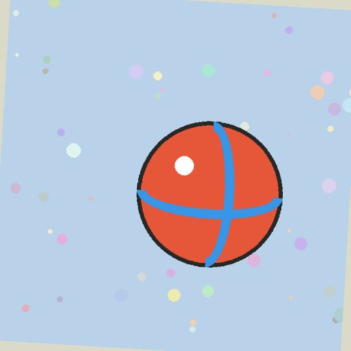

src и href, requests, скриншоты, ленивая загрузка, датасет
Selenium находит элементы, но скачивать файлы не умеет. Сегодня научимся доставать адрес и скачивать то, что по нему лежит.
В конце пары у вас будет:
📤 картинка + скриншот всей страницы — задание LXP
🖼 72 картинки из фотобанка с прокруткой
📂 датасет «папка = класс» — заготовка к КТ
img = driver.find_element(By.TAG_NAME, "img") # 1
src = img.get_attribute("src") # 2: сразу полный адрес
response = requests.get(src) # 3
with open("cat.jpg", "wb") as f:
f.write(response.content)
| Что на странице | Адрес здесь | Как достать |
|---|---|---|
картинка <img> | src | img.get_attribute("src") |
| ссылка на файл, PDF, оригинал фото | href | a.get_attribute("href") |
| картинка ещё не загрузилась | data-src | get_attribute("data-src") + urljoin |
| картинка разных размеров | srcset | «адрес ширина, адрес ширина» — последний крупнее |
| фон блока | CSS background-image | el.value_of_css_property("background-image") |
src и href Selenium отдаёт полными. data-* — как в коде: photos/thumb/ball_01.jpg. Полный адрес: urljoin(driver.current_url, адрес).
response = requests.get(src)
print(response.status_code) # 200?
print(response.headers["Content-Type"]) # image/jpeg
with open("cat.jpg", "wb") as f: # w + b = байты #!
f.write(response.content) # .content #!
| Код | Значит |
|---|---|
| 200 | всё хорошо |
| 403 | не пускают — нужен User-Agent / cookies |
| 404 | нет такого файла — проверьте адрес |
.text и режим "w" испортят картинку: файл создастся, но не откроется.
Новый Chrome (157+) сам меняет http:// на https://. У ithub.role.ru https нет — и Selenium получает пустую страницу: картинки не находятся, NoSuchElementException.
Глазами в обычном браузере всё видно — поэтому ошибка такая непонятная.
options = webdriver.ChromeOptions() options.add_argument( "--disable-features=HttpsUpgrades," "HttpsFirstBalancedModeAutoEnable") #! driver = webdriver.Chrome(options=options)
В ноутбуке это уже сделано в ⚙️ Подготовке. Firefox: options.set_preference("dom.security.https_first", False)
| Что | Код | Получится |
|---|---|---|
| видимая часть | driver.save_screenshot("a.png") | только то, что влезло в окно |
| один элемент | img.screenshot("a.png") | как картинку видно на странице |
| вся страница | окно на всю высоту → save_screenshot | страница целиком |
height = driver.execute_script("return document.documentElement.scrollHeight")
driver.set_window_size(1280, height + 200) # +200: в размер окна входит рамка браузера #!
driver.save_screenshot("page.png")
миниатюра, растянутаяthumb · 128×128 · 4 КБ

оригиналfull · 512×512 · 20 КБ
В выдаче поиска картинок в <img> — миниатюра. Оригинал — по ссылке карточки. Для нейросети нужны оригиналы.
Красная рамка — то, что сейчас на экране. Ниже — ещё заглушки.
<img src="placeholder.svg"
data-src="photos/thumb/ball_01.jpg">
Пока карточку не видно — в src заглушка. Браузер подставит data-src в src, когда карточка окажется на экране.
Быстро прокрутили вниз — часть картинок осталась заглушками. Берите href или data-src, а не src.
before = 0
while True:
driver.execute_script("window.scrollTo(0, document.documentElement.scrollHeight)")
time.sleep(1.5) # новые карточки идут по сети
now = len(driver.find_elements(By.CSS_SELECTOR, ".gallery a.photo"))
if now == before: # не выросло — конец #!
break
before = now
Надписи «это всё» на большинстве сайтов нет. Универсальный признак конца — число карточек перестало расти.
Для Яндекса добавьте ограничение: if now >= 100: break — иначе листать можно очень долго.
dataset/ ├── ball/ ball_01.jpg … ball_24.jpg ├── box/ box_01.jpg … box_24.jpg └── tree/ tree_01.jpg … tree_24.jpg
КТ: спарсить картинки нескольких классов с images.yandex.ru и обучить нейросеть их различать.
Нейросети читают датасет именно так: имя папки — это ответ. Сегодня собираем такой из фотобанка, в КТ — из Яндекса.
os.makedirs(f"dataset/{cls}", exist_ok=True)
with open(f"dataset/{cls}/{name}", "wb") as f:
f.write(requests.get(url).content)
time.sleep(0.1) # вежливость: не 72 запроса за секунду
Браузер присылает свой User-Agent и cookies. requests — python-requests/2.x без cookies. Некоторые сайты такому отвечают 403.
s = requests.Session()
s.headers["User-Agent"] = driver.execute_script(
"return navigator.userAgent")
for c in driver.get_cookies():
s.cookies.set(c["name"], c["value"])
s.get(url) # вместо requests.get
JavaScript fetch внутри страницы → байты в base64 → Python. Браузер сам приложит свои cookies.
Это бонус-задание 10 в ноутбуке.
| Симптом | Причина |
|---|---|
нет img, page_source почти пустой | Chrome сменил http на https — флаг --disable-features |
| файл .jpg не открывается | записали .text или режим "w"; или скачали HTML вместо картинки |
в датасете placeholder.svg | брали src у незагруженных картинок |
| картинок 12 вместо 72 | не долистали страницу |
| скриншот «всей страницы» обрезан | забыли + 200 на рамку окна |
| 403 Forbidden | сайт не пускает requests — User-Agent / cookies |
Сдать в LXP: cat.jpg, page.png и ссылку на свою копию ноутбука.